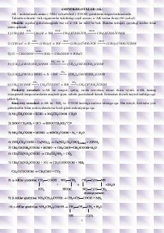

AVAminokislotalar va oqsillarning tuzilishi hamda xossalariga bag'ishlangan o'quv qo'llanma.
Ushbu qo'llanmada aminokislotalar, ularning fizik-kimyoviy xossalari, sintez qilish usullari hamda oqsillarning tuzilishi, tasnifi va darajalari haqida batafsil ma'lumot berilgan. Matnda turli aminokislota turlari va ularning tirik organizmlardagi ahamiyati ilmiy jihatdan tushuntirilgan.